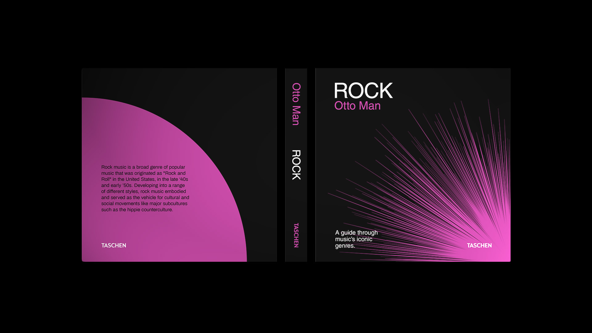

Covers collection
Editorial
NOV 2020 · Academic project
Exploring the multisensory universe of music, in this project there were developed three book covers for a collection of iconic music genres.


The main challenge was to represent the sound of each different genre through simple shapes, creating visual experiences and sensations that would translate the ones felt through listening to them.

The foundation of the collection identity is found in the layout and typography, as well as in the nature of its illustrations.
The simplicity of the whole is the key. Through it the illustrations are capable of reaching its true potential.

When combined together, the bigger picture is achieved and the illustrations are revealed in their full dimension.
Design by
Elisa Sampaio
Software
Adobe Illustrator, Adobe Photoshop